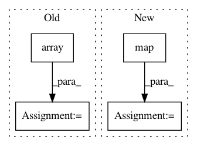

399ddf11f1dde162a5bcd1985a51d339e02e4887,scipy/special/tests/test_cython_special.py,,,#,12
Before Change
real_points = [-10, -1, 1, 10]
complex_points = [complex(*tup) for tup in product(real_points, repeat=2)]
TEST_POINTS = {
"f": list(np.array(real_points, dtype=np.float32)),
"d": list(np.array(real_points, dtype=np.float64)),
"g": list(np.array(real_points, dtype=np.longdouble)),
"F": list(np.array(complex_points, dtype=np.complex64)),
"D": list(np.array(complex_points, dtype=np.complex128)),
"G": list(np.array(complex_points, dtype=np.longcomplex)),
"i": list(np.array(real_points, dtype=np.intc)),
"l": list(np.array(real_points, dtype=np.long)),
}
def _generate_test_points(typecodes):
axes = tuple(map(lambda x: TEST_POINTS[x], typecodes))
After Change
real_points = [-10, -1, 1, 10]
complex_points = [complex(*tup) for tup in product(real_points, repeat=2)]
TEST_POINTS = {
"f": map(lambda x: _float(x).val, real_points),
"d": map(lambda x: _double(x).val, real_points),
"g": map(lambda x: _long_double(x).val, real_points),
"F": map(lambda x: _complex(x).val, complex_points),
"D": map(lambda x: _double_complex(x).val, complex_points),
"G": map(lambda x: _long_double_complex(x).val, complex_points),
"i": map(lambda x: _int(x).val, real_points),
"l": map(lambda x: _long(x).val, real_points),
}
def _generate_test_points(typecodes):
axes = tuple(map(lambda x: TEST_POINTS[x], typecodes))
In pattern: SUPERPATTERN
Frequency: 3
Non-data size: 4
Instances
Project Name: scipy/scipy
Commit Name: 399ddf11f1dde162a5bcd1985a51d339e02e4887
Time: 2016-06-18
Author: person142@users.noreply.github.com
File Name: scipy/special/tests/test_cython_special.py
Class Name:
Method Name:
Project Name: uber/ludwig
Commit Name: 859295134f42479477f893c429695742c14dfe97
Time: 2020-05-06
Author: piero@uber.com
File Name: ludwig/neuropod.py
Class Name:
Method Name: postprocess_for_neuropod
Project Name: ilastik/ilastik
Commit Name: da09a6e992ff6dad66b81ef01e1a209867edcf6b
Time: 2014-04-28
Author: bergs@janelia.hhmi.org
File Name: lazyflow/operators/opResize.py
Class Name: OpResize
Method Name: setupOutputs